# Texture Mapping
纹理顾名思义就是表面是什么样子的。
我们希望物体的不同地方有不同的属性，也就是在 shading 里说的顶点的自身属性。三维物体的表面都是二维，可以用一个二维的图来表示，被称作纹理。
纹理上的坐标一般用 uv 表示，我们姑且不管如何从一个纹理坐标映射到三维的表面坐标，暂时假设这个映射已存在。和普通的像素 pixel 相似，纹理上的像素被称为 texel。一般理想情况下一个 pixel 会被映射到一个 texel 上，如果不是理想情况则需要做一些处理。
一般约定纹理坐标 u 和 v 的范围都是 0~1。如果设置绑定到一个面上的纹理坐标为 0~10，则这个纹理会重复 10 次，重复时涉及一个纹理环绕方式。纹理一般都会重复，只要设计的好就能无缝衔接。
下一个很自然的问题：如果知道三角形三个顶点对应的纹理坐标，如何获得三角形内部点的纹理坐标？和之前的着色频率部分一样，仍然是使用重心坐标进行插值。
使用纹理来表示 diffuse：
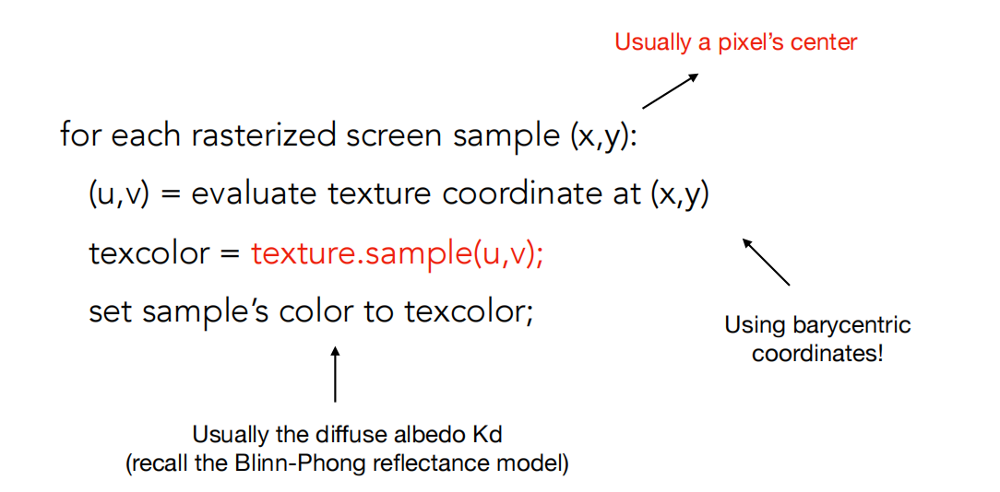
# Texture Magnification
纹理比较小，导致多个 pixel 被映射到同一个 texel 上。一般有下面三种处理方法。
- Nearest 每个 pixel 选取最近的 texel。
- Bilinear 双线性插值：取周围四个点进行插值。
- Bicubic 取周围 16 个点进行插值。
Bilinear 双线性插值的具体做法如下：
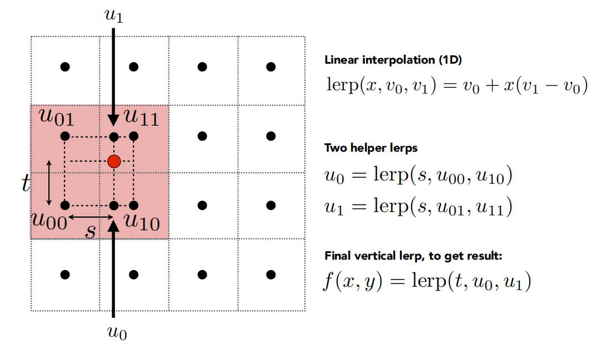
# Mipmap
纹理比较大，导致一个 pixel 映射过去时覆盖了过多的 texel。但是毕竟我们只能选取一个 texel 作为结果，就会产生走样的问题。走样问题和看到车轮倒转等现象都是由同样的原因引起的，那就是采样频率小于信号的频率。
对抗走样的方法，一个自然简单的思路是每个 pixel 内部分出更多小 pixel，找到这些小 pixel 对应的 texel 之后把结果平均。这样的方法好像被叫做超采样，显然性能消耗是成倍增长的。
另一个想法就是 mipmap。既然覆盖了很多 texel，我们直接用这些 texel 的平均值不就好了。那么有没有可能做到给出任意一个方形范围，我们立即能知道这个范围内的平均 texel 值。闫老师说这是做一种范围查询 range query，与之相对的是点查询 point query。总之 mipmap 就是用来做这个范围查询的。
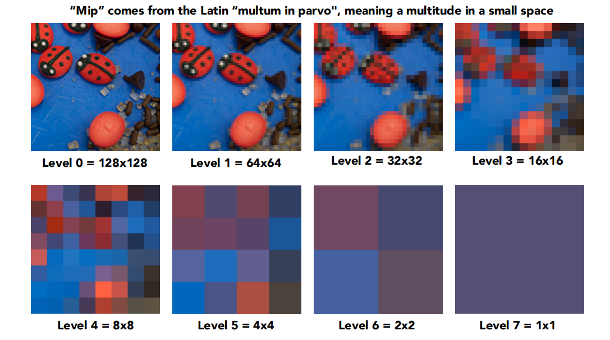
Mipmap 每一层的宽高都是上一层的一半。要注意原图是 level 0，最高层级数是 log 原纹理长度。总共的存储空间是 倍的原纹理存储空间，这个结果可以用级数求和计算，或者…… 直接从图形上看出来：对于一个图象，第一层的图象可以复制三份来填充第零层图象，剩下四分之一的部分再交给第二层及以下的图象去填充，最后都填满之后用的是三倍空间，所以额外的空间是 。
计算 mipmap 级数 D 的方法：
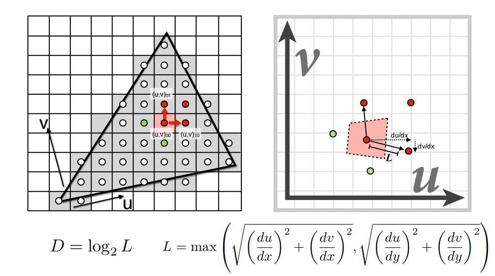
表示 LxL 的 texel 在 D 层是会对应一个 texel。如果一个像素对应的 texel 是 4x4 的，那么去找第二层即可。
最后找出来的 D 不是连续的，也就是说会从上一层直接变到下一层。如果想要一种连续的效果可以再进行一下插值。即先在上一层和下一层分别进行双线性插值得到上一层和下一层的结果，然后对这两个结果进行关于层的插值，这个被称为 Trilinear Interpolation。
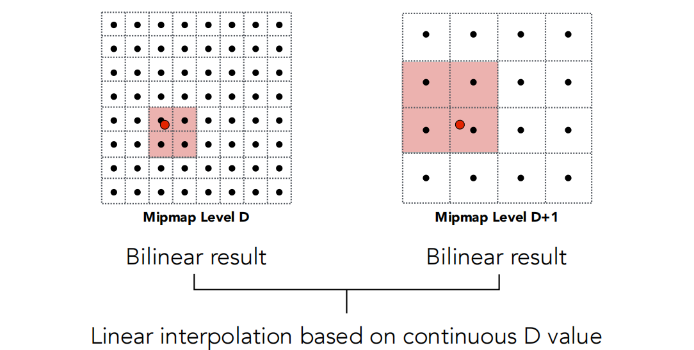
# Anisotropic Filtering and EWA Filtering
Mipmap Trilinear Interpolation 也可能出现 Overblur 的现象。原因是 Mipmap 只能进行方块的范围查询。可以用各向异性过滤进行不同长宽比的查询。
这个不懂还是不多说了。
# WebGL 纹理
实践一下纹理的放大和缩小。
| 普通过滤方式 | 描述 |
|---|---|
| GL_NEAREST | 是 OpenGL 默认的纹理过滤方式，选择中心点最接近纹理坐标的那个像素 |
| GL_LINEAR | 于纹理坐标附近的纹理像素，计算出一个插值，近似出这些纹理像素之间的颜色 |
Mipmap 过滤方式：
| Mipmap 过滤方式 | 描述 |
|---|---|
| GL_NEAREST_MIPMAP_NEAREST | 使用最邻近的多级渐远纹理来匹配像素大小，并使用邻近插值进行纹理采样 |
| GL_LINEAR_MIPMAP_NEAREST | 使用最邻近的多级渐远纹理级别，并使用线性插值进行采样 |
| GL_NEAREST_MIPMAP_LINEAR | 在两个最匹配像素大小的多级渐远纹理之间进行线性插值，使用邻近插值进行采样 |
| GL_LINEAR_MIPMAP_LINEAR | 在两个邻近的多级渐远纹理之间使用线性插值，并使用线性插值进行采样 |
Mipmap 的过滤方式看起来像是 LINEAR 和 NEAREST 的排列组合。第一个 LINEAR 或 NEAREST 表示的是在一层里面的采样方法，第二个 LINEAR 或 NEAREST 表示要找的是两层纹理中间时选择最近的一层还是对这两层进行线性插值。
要注意 Mipmap （多级渐远纹理）的过滤方式只能用于缩小，不能设置其为放大过滤。
缩小都是 LINEAR，放大是 NEAREST 和 LINEAR：
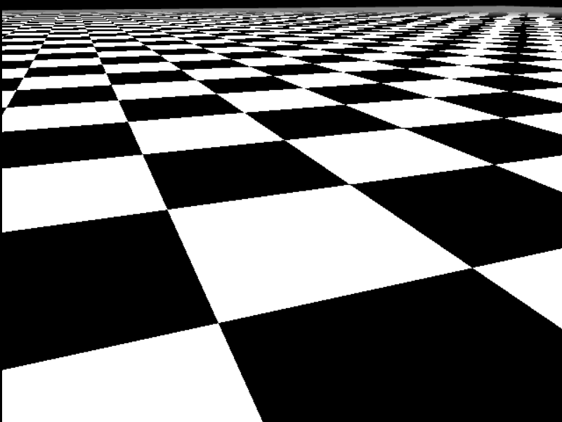
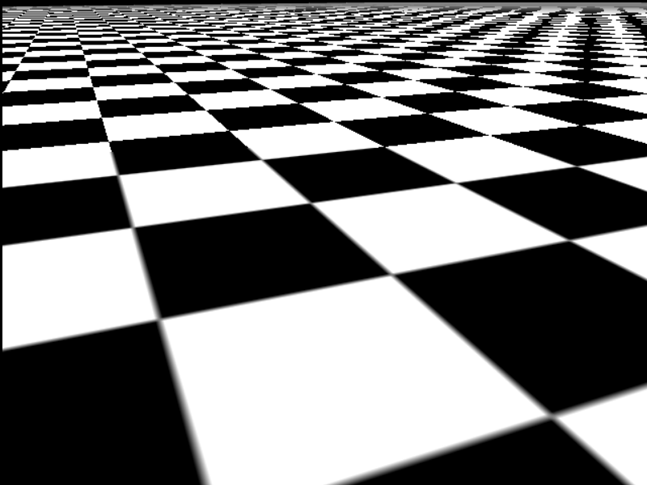
放大都是 LINEAR，缩小的 Mipmap 效果：
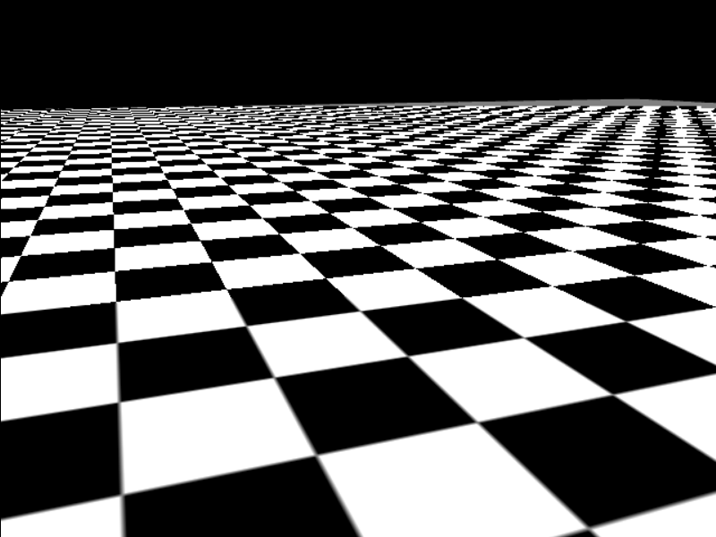
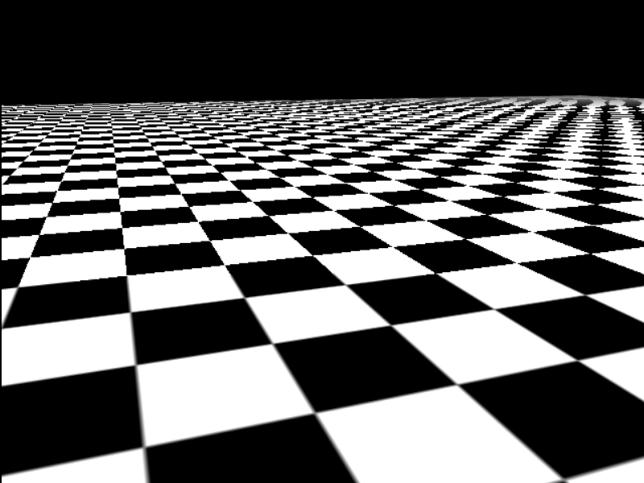
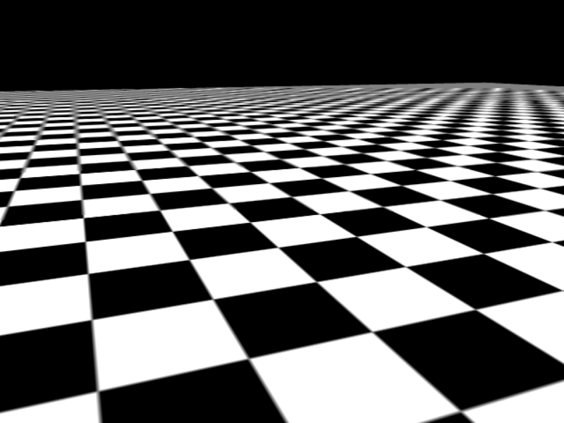
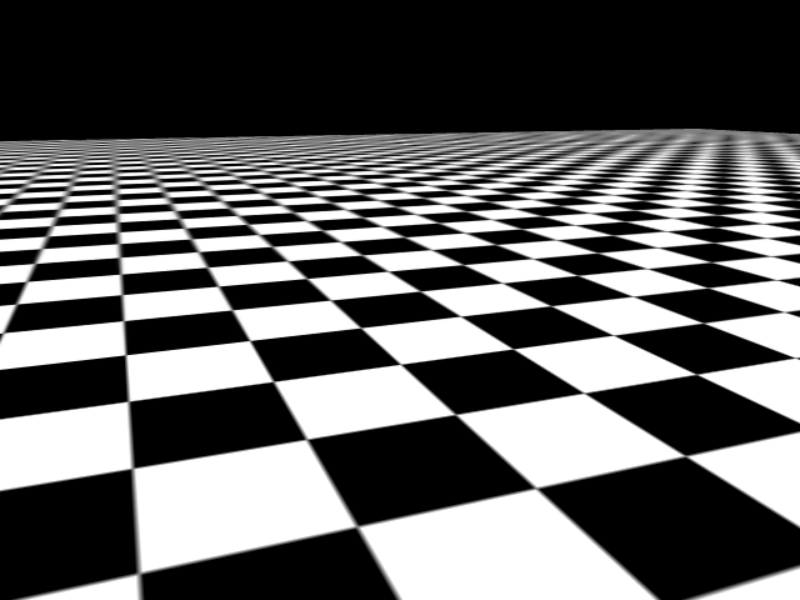
第一个 LINEAR 或 NEAREST 表示在一层中，第二个 LINEAR 或 NEAREST 表示在不同层中。
默认也就是放大和缩小时都使用 LINEAR，可以看到远处会有很明显的摩尔纹。效果最好的应该是放大 LINEAR，缩小 LINEAR-LINEAR。
下方点击后，鼠标控制相机方向，wasd 空格 shift 控制相机移动。
参考资料：
MDN WebGL Tutorial: Using textures in WebGL
LearnOpenGL Textures
纹理映射 (Texture Mapping) 及 Mipmap 技术